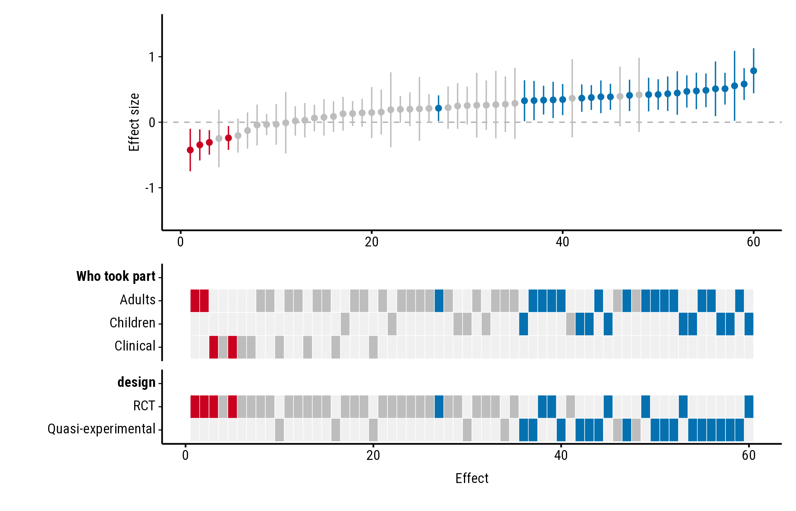
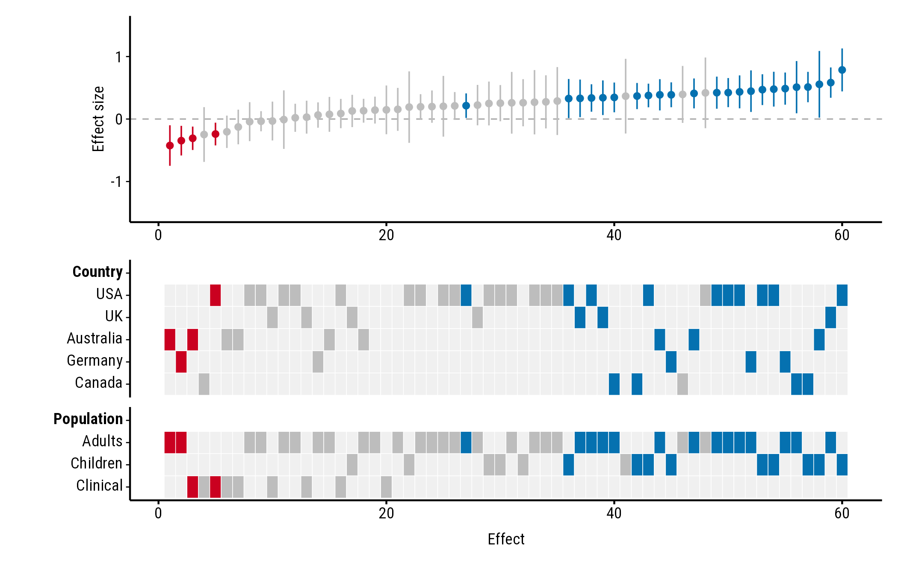
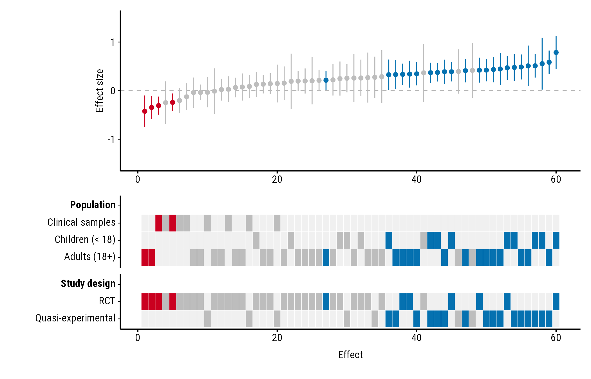
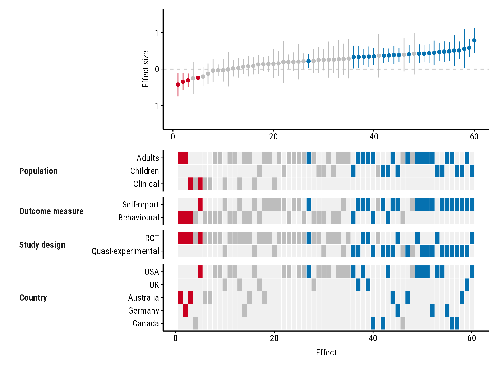
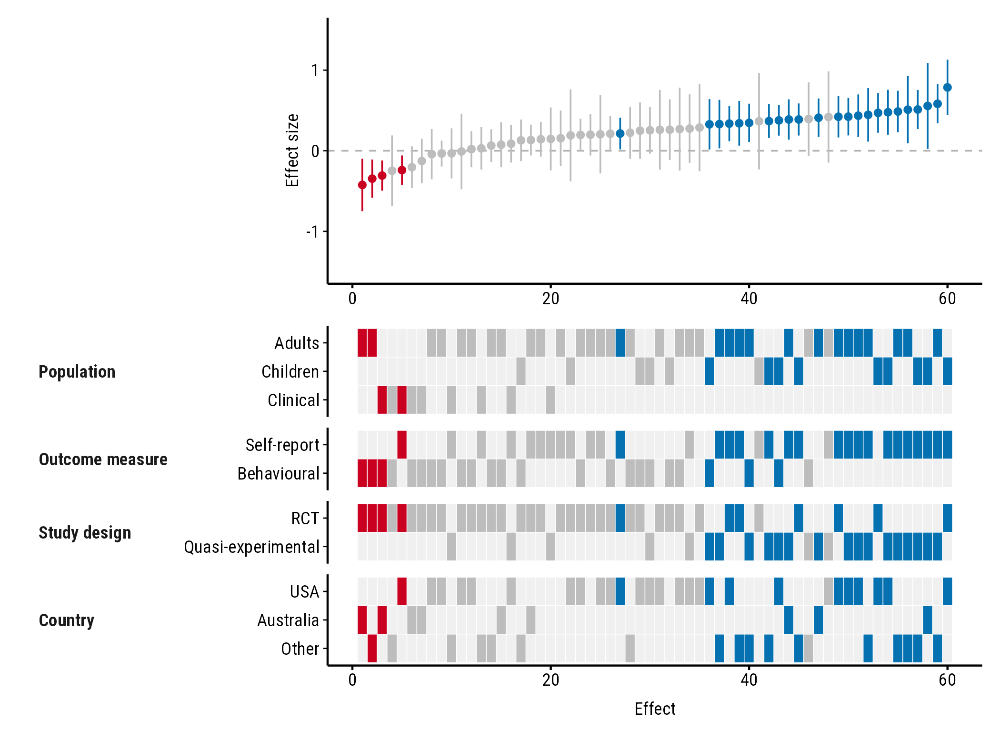

How to choose which study properties the heatmap shows, in what
order, and how to shorten the heatmap when there are many. All the
examples use the forestmap_example data that comes with the
package.
Headings
Name each property to set its heading. Without a name, the column name is used:
plot_forestmap(
forestmap_example, "smd", vi = "vi",
moderators = c("Who took part" = "population", "design")
)
Which properties, in which order
The heatmap shows the properties you list, in the order you list them:
plot_forestmap(
forestmap_example, "smd", vi = "vi",
moderators = c("Country" = "country", "Population" = "population")
)
Order and names of the rows
Rows follow the order of the factor’s levels. Change the order with
factor(..., levels = ...), and rename levels with
labels = ...:
dat <- forestmap_example
dat$population <- factor(
dat$population,
levels = c("Clinical", "Children", "Adults"),
labels = c("Clinical samples", "Children (< 18)", "Adults (18+)")
)
plot_forestmap(
dat, "smd", vi = "vi",
moderators = c("Population" = "population", "Study design" = "design")
)
Numeric properties
A numeric column, such as mean age or sample size, gets a single row instead of one row per level. See Numeric study properties.
Shortening a tall heatmap
With many properties or levels the heatmap gets tall. Two options help.
Compact layout
layout = "compact" puts each property’s name beside its
rows instead of on a row of its own:
plot_forestmap(
forestmap_example, "smd", vi = "vi",
moderators = c(
"Population" = "population",
"Outcome measure" = "outcome",
"Study design" = "design",
"Country" = "country"
),
layout = "compact"
)
Fewer rows: max_levels
max_levels sets the most rows any property can have. The
most common levels are kept, and the rest are merged into one “Other”
row. With max_levels = 3, the five countries become USA,
Australia and Other:
plot_forestmap(
forestmap_example, "smd", vi = "vi",
moderators = c(
"Population" = "population",
"Outcome measure" = "outcome",
"Study design" = "design",
"Country" = "country"
),
layout = "compact",
max_levels = 3
)
If several levels tie for the last place, all of them are kept and you get a warning saying so.